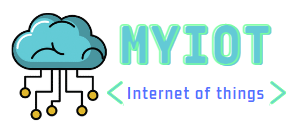

<mat-drawer-container class="container" autosize >
  <mat-drawer #drawer mode="side" class="sidenav mat-elevation-z4" [mode]="sideNavMode" [opened]="sideNavOpen">
    <mat-nav-list>
      
      <div *ngIf="sideNavMode == 'side'; else elseBlock">
        <a mat-list-item routerLink="home" class="sidenav-list-item">
          <mat-icon class="sidenav-icons">home</mat-icon>
          home
        </a>
        <a mat-list-item routerLink="analog-output-device/all" class="sidenav-list-item">
          <mat-icon class="sidenav-icons">show_chart</mat-icon>
          Dispositivos analógicos
        </a>
        <a mat-list-item routerLink="discrete-device/all" class="sidenav-list-item">
          <mat-icon class="sidenav-icons">radio_button_checked</mat-icon>
          Dispositivos discretos
        </a>
        <a mat-list-item routerLink="measuring-device/all" class="sidenav-list-item">
          <mat-icon class="sidenav-icons">insert_chart_outlined</mat-icon>
          Dispositivos de medição
        </a>
        <a mat-list-item  routerLink="user" class="sidenav-list-item">
          <mat-icon class="sidenav-icons">account_circle</mat-icon>
          Minha conta
        </a>
        <a mat-list-item *ngIf="userProfile == 'ADMIN'" class="sidenav-list-item">
          <mat-icon class="sidenav-icons">person_outline</mat-icon>
          Administrador
        </a>
        <a mat-list-item (click)="logout()" class="sidenav-list-item">
          <mat-icon class="sidenav-icons">exit_to_app</mat-icon>
          Logout
        </a>
      </div>
      <ng-template #elseBlock>
        <a mat-list-item routerLink="home" class="sidenav-list-item" (click)="drawer.toggle()">
          <mat-icon class="sidenav-icons">home</mat-icon>
          home
        </a>
        <a mat-list-item routerLink="analog-output-device/all" (click)="drawer.toggle()" class="sidenav-list-item">
          <mat-icon class="sidenav-icons">show_chart</mat-icon>
          Dispositivos analógicos
        </a>
        <a mat-list-item routerLink="discrete-device/all" (click)="drawer.toggle()" class="sidenav-list-item">
          <mat-icon class="sidenav-icons">radio_button_checked</mat-icon>
          Dispositivos discretos
        </a>
        <a mat-list-item routerLink="measuring-device/all" (click)="drawer.toggle()" class="sidenav-list-item">
          <mat-icon class="sidenav-icons">insert_chart_outlined</mat-icon>
          Dispositivos de medição
        </a>
        <a mat-list-item routerLink="user" class="sidenav-list-item" (click)="drawer.toggle()">
          <mat-icon class="sidenav-icons">account_circle</mat-icon>
          Minha conta
        </a>
        <a mat-list-item *ngIf="userProfile == 'ADMIN'" class="sidenav-list-item">
          <mat-icon class="sidenav-icons">person_outline</mat-icon>
          Administrador
        </a>
        <a mat-list-item (click)="logout()" class="sidenav-list-item">
          <mat-icon class="sidenav-icons">exit_to_app</mat-icon>
          Logout
        </a>
      </ng-template>

    </mat-nav-list>
  </mat-drawer>

  <div class="sidenav-content">
    <button type="button" mat-button (click)="drawer.toggle()" class="sidenav-button mat-elevation-z4">
      <mat-icon>menu</mat-icon>
    </button>
    <div>
      <router-outlet></router-outlet>
    </div>
    <app-footer></app-footer>
  </div>
</mat-drawer-container>

